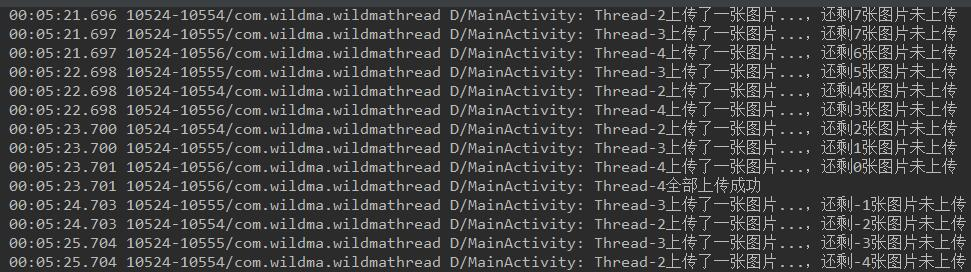

一、进程与线程
- 进程：进程就是正在执行的程序。
- 线程：是程序执行的一条路径, 一个进程中可以包含多条线程。
通俗理解：例如你打开微信就是打开一个进程，在微信里面和好友视频聊天就是开启了一条线程。 - 两者之间的关系：
一个进程里面可以有多条线程，至少有一条线程。
一条线程一定会在一个进程里面。
关于进程与线程的讲解，这篇文章讲的挺好的–>进程与线程的一个简单解释
二、创建线程的三种方式
2.1 继承Thread
1、定义一个类MyThread继承Thread，并重写run方法。
2、将要执行的代码写在run方法中。
3、创建该类的实例，并调用start()方法开启线程。
代码如下：
public class MainActivity extends AppCompatActivity {
private final String TAG = this.getClass().getSimpleName();
@Override
protected void onCreate(Bundle savedInstanceState) {
super.onCreate(savedInstanceState);
setContentView(R.layout.activity_main);
//3、创建该类的实例，并调用start()方法开启线程。
MyThread myThread = new MyThread();
myThread.start();
}
//1、定义一个类MyThread继承Thread，并重写run方法。
class MyThread extends Thread {
public void run() {
//2、将执行的代码写在run方法中。
for (int i = 0; i < 100; i++) {
Log.d(TAG, "线程名字:" + Thread.currentThread().getName() + " i=" + i);
}
}
}
}2.2 实现Runnable接口
1、定义一个类MyRunnable实现Runnable接口，并重写run方法。
2、将要执行的代码写在run方法中。
3、创建Thread对象, 传入MyRunnable的实例，并调用start()方法开启线程。
代码如下：
public class MainActivity extends AppCompatActivity {
private final String TAG = this.getClass().getSimpleName();
@Override
protected void onCreate(Bundle savedInstanceState) {
super.onCreate(savedInstanceState);
setContentView(R.layout.activity_main);
//3、创建Thread对象, 传入MyRunnable的实例，并调用start()方法开启线程。
Thread thread = new Thread(new MyRunnable());
thread.start();
}
//1、定义一个类MyRunnable实现Runnable接口，并重写run方法。
class MyRunnable implements Runnable {
public void run() {
//2、将执行的代码写在run方法中。
for (int i = 0; i < 100; i++) {
Log.d(TAG, "线程名字:" + Thread.currentThread().getName() + " i=" + i);
}
}
}
}2.3 实现Callable接口
Callable是类似于Runnable的接口，实现Callable接口的类和实现Runnable的类都是可被其它线程执行的任务。
1、自定义一个类MyCallable实现Callable接口，并重写call()方法
2、将要执行的代码写在call()方法中
3、创建线程池对象，调用submit()方法执行MyCallable任务，并返回Future对象
4、调用Future对象的get()方法获取call()方法执行完后的值
代码如下：
public class MainActivity extends AppCompatActivity {
private final String TAG = this.getClass().getSimpleName();
@Override
protected void onCreate(Bundle savedInstanceState) {
super.onCreate(savedInstanceState);
setContentView(R.layout.activity_main);
//3、创建线程池对象，调用submit()方法执行MyCallable任务，并返回Future对象
ExecutorService pool = Executors.newSingleThreadExecutor();
Future<Integer> f1 = pool.submit(new MyCallable());
//4、调用Future对象的get()方法获取call()方法执行完后的值
try {
Log.d(TAG, "sum=" + f1.get());
} catch (InterruptedException e) {
e.printStackTrace();
} catch (ExecutionException e) {
e.printStackTrace();
}
//关闭线程池
pool.shutdown();
}
//1、自定义一个类MyCallable实现Callable接口，并重写call()方法
public class MyCallable implements Callable<Integer> {
@Override
public Integer call() throws Exception {
//2、将要执行的代码写在call()方法中
int sum = 0;
for (int i = 0; i <= 100; i++) {
sum += i;
}
return sum;
}
}
}三、创建线程的三种方式对比
3.1 继承Thread类与实现Runnable接口的区别
我们都知道java支持单继承，多实现。实现Runnable接口还可以继承其他类，而使用继承Thread就不能继承其他类了。所以当你想创建一个线程又希望继承其他类的时候就该选择实现Runnable接口的方式。
3.2 实现Callable接口与Runnable接口的区别
Callable执行的方法是call() ，而Runnable执行的方法是run()。
call() 方法有返回值还能抛出异常， run() 方法则没有没有返回值，也不能抛出异常。
四、多线程
4.1 概念
一个进程中开启了不止一个线程。
4.2 多线程的优缺点
优点
1、提高CPU的使用率
例如朋友圈发表图片，当你上传9张图片的时候，如果开启一个线程用同步的方式一张张上传图片，假设每次上传图片的线程只占用了CPU 1%d的资源，剩下的99%资源就浪费了。但是如果你开启9个线程同时上传图片，CPU就可以使用9%的资源了。
2、提高程序的工作效率
还是拿朋友圈发表图片来说，假设开启一个线程上传一张图片的时间是1秒，那么同步的方式上传9张就需要9秒，但是你开启9个线程同时上传图片，那么就只需要1秒就完成了。缺点
1、如果有大量的线程,会影响性能,因为CPU需要在它们之间切换。
2、更多的线程需要更多的内存空间。
3、多线程操作可能会出现线程安全或者死锁等问题。
4.3 多线程并行和并发的区别
概念
并行：多个处理器或者多核处理器同时执行多个不同的任务。
并发：一个处理器处理多个任务。打个比喻
并行就是一个人用他的左手喂女儿吃饭，同时用右手喂儿子吃饭。
并发就是一个人先喂女儿吃一口饭，接着喂儿子吃一口，然后再喂女儿吃一口，轮流喂。举个多线程并发操作同一数据出现线程安全的例子
利用多线程上传9张图片，并提示还剩几张图片未上传。代码如下：public class MainActivity extends AppCompatActivity { private final String TAG = this.getClass().getSimpleName(); //图片数量 private int mImgNum; @Override protected void onCreate(Bundle savedInstanceState) { super.onCreate(savedInstanceState); setContentView(R.layout.activity_main); } public void multiThread(View view) { mImgNum = 9; //开启3条线程上传图片 MyRunnable myRunnable = new MyRunnable(); new Thread(myRunnable).start(); new Thread(myRunnable).start(); new Thread(myRunnable).start(); } public class MyRunnable implements Runnable { @Override public void run() { while (true) { if (mImgNum == 0) { Log.d(TAG, Thread.currentThread().getName() + "全部上传成功"); break; } try { //模拟上传一张图片需要1秒钟的时间 Thread.sleep(1000); } catch (InterruptedException e) { e.printStackTrace(); } mImgNum--; Log.d(TAG, Thread.currentThread().getName() + "上传了一张图片...，还剩" + mImgNum + "张图片未上传"); } } } }
打印结果如下：

由图可知，图片数量出现了负数，显然是错误的。
原因：
出现这种错误的原因是有多个线程在操作共享的数据。即一个线程在操作共享数据的过程中CPU切换到其他线程又对该数据进行操作，这就是所谓的多线程并发。
解决：
把操作数据的那段代码用synchronized进行同步, 这样就能保证在同一时刻只能有一个线程能够访问。
代码如下：
public class MainActivity extends AppCompatActivity {
private final String TAG = this.getClass().getSimpleName();
//图片数量
private int mImgNum;
@Override
protected void onCreate(Bundle savedInstanceState) {
super.onCreate(savedInstanceState);
setContentView(R.layout.activity_main);
}
public void multiThread(View view) {
mImgNum = 9;
//开启3条线程上传图片
MyRunnable myRunnable = new MyRunnable();
new Thread(myRunnable).start();
new Thread(myRunnable).start();
new Thread(myRunnable).start();
}
public class MyRunnable implements Runnable {
@Override
public void run() {
while (true) {
//加上synchronized进行同步，保证在同一时刻只能有一个线程能够访问
synchronized (MyRunnable.class) {
if (mImgNum == 0) {
Log.d(TAG, Thread.currentThread().getName() + "全部上传成功");
break;
}
try {
//模拟上传一张图片需要1秒钟的时间
Thread.sleep(1000);
} catch (InterruptedException e) {
e.printStackTrace();
}
mImgNum--;
Log.d(TAG, Thread.currentThread().getName() + "上传了一张图片...，还剩" + mImgNum + "张图片未上传");
}
}
}
}
}打印结果如下：
由图可知，图片数量正常了，但是发现一秒钟只上传了一张图片，而且只有一个线程在上传（每次while循环， 哪个线程先访问是随机的，偶尔会出现3个线程都在上传的情况，线程休眠时间设置为100毫秒比较容易复现），并没有实现并发。其实这里的确解决了多线程并发操作同一数据出现线程安全的问题，但是因为这里要模拟上传图片，把休眠时间放到了synchronized中，所以导致没有并发，用线程池就不会有这个问题，这个放到后面去讲。
五、线程池
5.1 关于线程池
前面举的朋友圈发表图片的多线程例子中，为了提高CPU的使用率和程序的工作效率就需要创建9个线程来上传图片。但是线程的创建和销毁是非常耗CPU和内存的，因为它涉及到要与操作系统进行交互。这样就可能导致创建与销毁线程的开销比实际业务还大，而线程池就能很好的解决这些问题。线程池里的每一个线程结束后，并不会销毁（可以设置超时销毁），而是回到线程池中成为空闲状态，等待下一个对象来使用。
5.2 使用线程池的优点
- 可以重用线程池中的线程，避免因为线程的创建和销毁所带来的性能开销。
- 能有效控制线程池的最大并发数，避免大量的线程之间因互相抢占系统资源而导致的阻塞现象。
- 能够对线程进行简单的管理（关闭、回收等），并提供定时执行以及指定间隔循环执行等功能。
5.3 线程池中重要的几个类
- Executor：java中线程池的顶级接口，可以称它为一个执行器，通过查看源码也知道，他只有一个简单的方法execute(Runnable command)，就是用来执行提交的任务。源码如下：
【Executor.java】public interface Executor { void execute(Runnable command); } - ExecutorService：Executor的子类，也是真正的线程池接口。它提供了提交任务和关闭线程池等方法。调用submit方法提交任务还可以返回一个Future对象，利用该对象可以了解任务执行情况，获得任务的执行结果或取消任务。
- Executors：由于线程池配置比较复杂，自己配置的线程池可能性能不是最好的。Executors就是用来方便创建各种常用线程池的工具类。
- ThreadPoolExecutor：ExecutorService的默认实现，Executors创建各种线程池的时候内部其实就是调用了ThreadPoolExecutor的构造方法。下面通过查看源码验证。
例如随便创建一个线程池：
点击newCachedThreadPool()进去，里面确实调用了ThreadPoolExecutor的构造方法，如下：ExecutorService newCachedThreadPool = Executors.newCachedThreadPool();
【Executor.java】public static ExecutorService newCachedThreadPool() { return new ThreadPoolExecutor(0, Integer.MAX_VALUE, 60L, TimeUnit.SECONDS, new SynchronousQueue<Runnable>()); }
5.4 ThreadPoolExecutor构造函数参数说明
下面从源码中拿一个参数最完整的来讲解，如下：
【ThreadPoolExecutor.java】
public ThreadPoolExecutor(int corePoolSize,
int maximumPoolSize,
long keepAliveTime,
TimeUnit unit,
BlockingQueue<Runnable> workQueue,
ThreadFactory threadFactory,
RejectedExecutionHandler handler) {
}- corePoolSize：核心线程数，如果运行的线程数少于corePoolSize，当有新的任务过来时会创建新的线程来执行这个任务，即使线程池中有其他空闲的线程。
- maximumPoolSize：线程池中允许的最大线程数。
- keepAliveTime：如果线程数多于核心线程数，那么这些多出来的线程如果空闲时间超过keepAliveTime将会被终止。
- unit：keepAliveTime参数的时间单位。
- workQueue：任务队列，通过线程池的execute方法会将任务Runnable存储在队列中。
- threadFactory：线程工厂，用来创建新线程。
- handler：添加任务出错时的策略捕获器，默认是ThreadPoolExecutor.AbortPolicy ，即添加任务出错就直接抛出异常 。
5.5 四种线程池
- FixedThreadPool：线程数量固定的线程池，空闲的线程不会被回收，超出的线程会在队列中等待。由于它只有核心线程并且不会被回收，所以能够快速响应外界的请求。
例子：创建线程数为3的线程池
打印结果：ExecutorService newFixedThreadPool = Executors.newFixedThreadPool(3); for (int i = 0; i < 10; i++) { final int finalI = i; newFixedThreadPool.execute(new Runnable() { @Override public void run() { try { Thread.sleep(1000); Log.d(TAG, "线程名字:" + Thread.currentThread().getName() + " i=" + finalI); } catch (InterruptedException e) { e.printStackTrace(); } } }); }
由打印结果可知，10个任务始终在3个线程中执行。
SingleThreadExecutor：只有一个核心线程的线程池，这样能保证所有任务按指定顺序来执行，不需要处理线程同步的问题。
例子：ExecutorService newSingleThreadExecutor = Executors.newSingleThreadExecutor(); for (int i = 0; i < 10; i++) { final int finalI = i; newSingleThreadExecutor.execute(new Runnable() { @Override public void run() { try { Thread.sleep(1000); Log.d(TAG, "线程名字:" + Thread.currentThread().getName() + " i=" + finalI); } catch (InterruptedException e) { e.printStackTrace(); } } }); }打印结果：
由打印结果可知，10个任务始终在1个线程中执行。CachedThreadPool：线程数量不固定的线程池，它只有非核心线程。在执行新的任务时，当线程池中有之前创建的可用线程就重用之前的线程，否则就新建一条线程。如果线程池中的线程在60秒未被使用就会被回收，这种线程池适合执行大量的耗时较少的任务。
例子：ExecutorService newCachedThreadPool = Executors.newCachedThreadPool(); for (int i = 0; i < 10; i++) { final int finalI = i; newCachedThreadPool.execute(new Runnable() { @Override public void run() { Log.d(TAG, "线程名字:" + Thread.currentThread().getName() + " i=" + finalI); } }); }
由打印结果可知，线程1出现了很多次，说明有重用之前创建的线程。ScheduledThreadPool：核心线程数量固定，非核心线程数量不固定的线程池，非核心线程闲置时会被立即回收，这种线程池主要用于执行定时任务和具有固定周期的重复任务。
例子：ScheduledExecutorService newScheduledThreadPool = Executors.newScheduledThreadPool(3); /** * 延迟2秒执行任务 */ newScheduledThreadPool.schedule(new Runnable() { @Override public void run() { Log.d(TAG, "线程名字:" + Thread.currentThread().getName() + "定时任务"); } }, 2, TimeUnit.SECONDS); /** * 延迟1秒后每2秒执行一次任务 */ newScheduledThreadPool.scheduleAtFixedRate(new Runnable() { @Override public void run() { Log.d(TAG, "线程名字:" + Thread.currentThread().getName() + "周期性任务"); } }, 1, 2, TimeUnit.SECONDS);
由打印结果可知，定时任务是2秒后执行任务，周期性任务是延迟1秒后每2秒执行一次任务。
5.6 利用线程池实现多线程并发
前面的例子虽然解决了多线程操作同一数据出现线程安全的问题，但是并发却没了，这里利用多线程可以很好的解决。
代码如下：
public class MainActivity extends AppCompatActivity {
private final String TAG = this.getClass().getSimpleName();
//图片数量
private int mImgNum;
//开启3条线程上传图片
ExecutorService newFixedThreadPool = Executors.newFixedThreadPool(3);
@Override
protected void onCreate(Bundle savedInstanceState) {
super.onCreate(savedInstanceState);
setContentView(R.layout.activity_main);
}
public void multiThread(View view) {
mImgNum = 9;
MyRunnable myRunnable = new MyRunnable();
for (int i = 0; i < 9; i++) {
//提交任务
newFixedThreadPool.submit(myRunnable);
}
}
public class MyRunnable implements Runnable {
@Override
public void run() {
try {
//模拟上传一张图片需要1秒钟的时间
Thread.sleep(1000);
} catch (InterruptedException e) {
e.printStackTrace();
}
//加上synchronized进行同步，保证在同一时刻只能有一个线程能够访问
synchronized (MyRunnable.class) {
mImgNum--;
Log.d(TAG, Thread.currentThread().getName() + "上传了一张图片...，还剩" + mImgNum + "张图片未上传");
if (mImgNum == 0) {
Log.d(TAG, Thread.currentThread().getName() + "全部上传成功");
}
}
}
}
}打印结果如下：
由图可知，每秒中上传了3张图片，确实实现了并发，而且线程安全问题也解决了。
相关源码：多线程并发 demo